Datacenter Topology
What is a Datacenter?
So far, in our model of the Internet, we’ve shown end hosts sending packets to each other. The end host might be a client machine (e.g. your local computer), or a server (e.g. YouTube). But, is YouTube really a single machine on the Internet serving videos to the entire world?
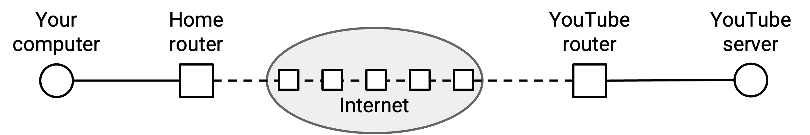
In reality, YouTube is an entire building of interconnected machines, working together to serve videos to clients. All these machines are in the same local network, and can communicate with each other to fulfill requests (e.g. if the video you requested is stored across different machines).
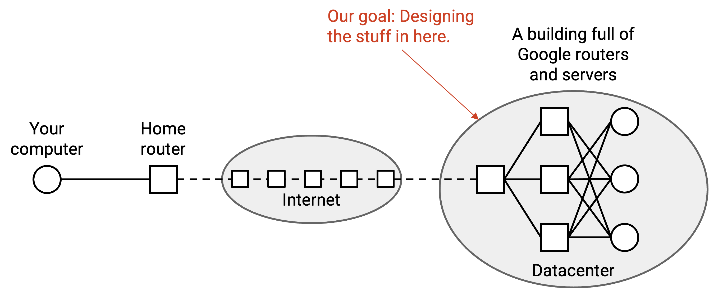
Recall that in the network-of-network model of the Internet, each operator is free to manage their local network however they want. In this section, we’ll focus on local networks dedicated to connecting servers inside a datacenter (as opposed to users like your personal computer). We’ll talk about challenges unique to these local networks, and specialized solutions to networking problems (e.g. congestion control and routing) that are specifically designed to work well in datacenter contexts.
In real life, a datacenter is housed in one physical location, often on dedicated properties. In addition to computing infrastructure (e.g. servers), datacenters also need supporting infrastructure like cooling systems and power supplies, though we’ll be focusing on the local network that connects the servers.
Datacenters serve applications (e.g. YouTube videos, Google search results, etc.). This is the infrastructure for the end hosts that you might want to talk to. Note that this is different from Internet infrastructure we’ve seen so far. Previously, we saw carrier hotels, buildings where lots of networks (owned by different companies) connect to each other with heavy-duty routers. This is the infrastructure for routers forwarding your packets to various destinations, but applications are usually not hosted in carrier hotels.
A datacenter is usually owned by a single organization (e.g. Google, Amazon), and that organization could host many different applications (e.g. Gmail, YouTube, etc.) in a single datacenter. This means that the organization has control over all the network infrastructure inside the datacenter’s local network.
Our focus is on modern hyperscale datacenters, operated by tech giants like Google and Amazon. The large scale introduces some unique challenges, but the concepts we’ll see also work at smaller scales.
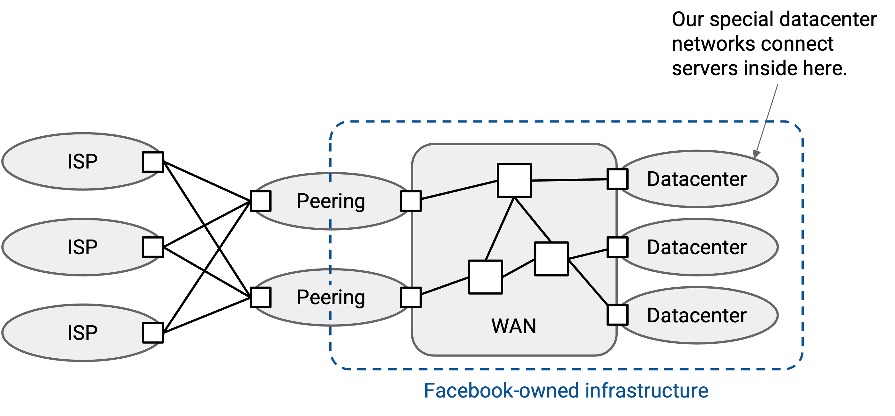
This map shows the wide area network (WAN) of all the networks owned by a tech giant like Google.
The peering locations connect Google to the rest of the Internet. These mainly consist of Google-operated routers that connect to other autonomous systems.
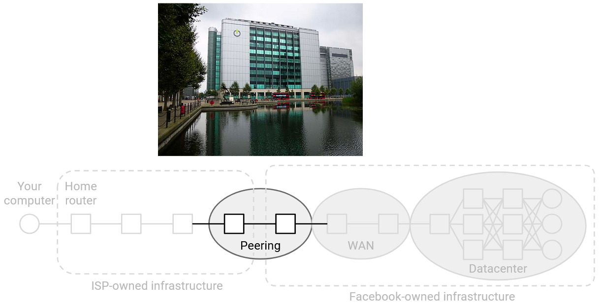
In addition to peering locations, Google also operates many datacenters. Applications in datacenters can communicate with the rest of the Internet via the peering locations. The datacenters and peering locations are all connected through Google-managed routers and links in Google’s wide area network.
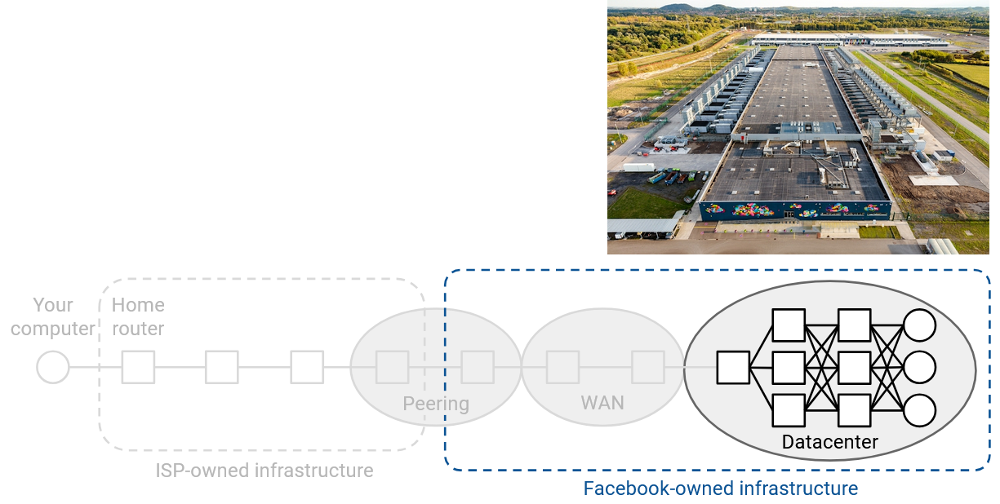
Datacenters and peering locations optimize for different performance goals, so they’re often physically located in different places.
Peering locations care about being physically close to other companies and networks. As a result, carrier hotels are often located in cities to be physically closer to customers and other companies.
By contrast, datacenters care less about being close to other companies, and instead prioritize requirements like physical space, power, and cooling. As a result, datacenters are often located in less-populated areas, sometimes with a nearby river (for cooling) or power station (datacenters might need hundreds of times more power than peering locations).
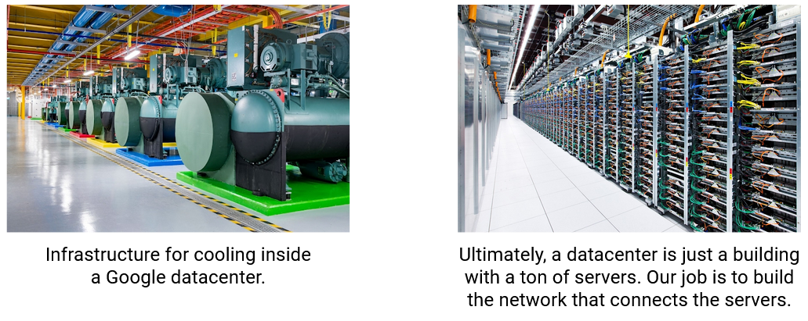
Why is the Datacenter Different?
What makes a datacenter’s local network different from general-purpose (wide area) networks on the rest of the Internet?
The datacenter network is run by a single organization, which gives us more control over the network and hosts. Unlike in the general-purpose Internet, we can run our own custom hardware or software, and we can enforce that every machine follows the same custom protocol.
Datacenters are often homogeneous, where every server and switch is built and operated exactly the same. Unlike in the general-purpose Internet, we don’t have to consider some links being wireless, and others being wired. In the general-purpose Internet, some computers might be newer than others, but in a datacenter, every computer is usually part of the same generation, and the entire datacenter is upgraded at the same time.
The datacenter network exists in a single physical location, so we don’t have to think about long-distance links like undersea cables. Within that single location, we have to support extremely high bandwidth.
Datacenter Traffic Patterns
When you make a request to a datacenter application, your packet travels across routers in the general-purpose Internet, eventually reaching Google-operated router. That router forwards your packet to one of the datacenter’s edge routers, which then forwards your packet to some individual server in the datacenter.
This one server probably doesn’t have all the information to process your request. For example, if you requested a Facebook feed, different servers might need to work together to combine ads, photos, posts, etc. It wouldn’t be practical if every server had to know everything about Facebook to process your request by itself.
In order for the different servers to coordinate, the first server triggers many backend requests to collect all the information needed in your request. A single user request could trigger hundreds of backend requests (521 on average, per a 2013 Facebook paper) before the response can be sent back to the user. In general, there’s significantly more backend traffic between servers, and the external traffic with the user is very small in comparison.
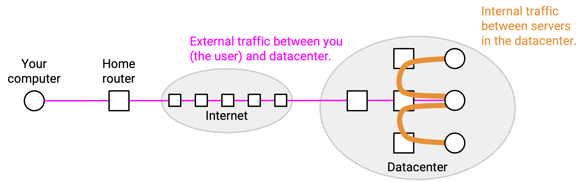
Most modern applications are dominated by internal traffic between machines. For example, if you run a distributed program like mapreduce, the different servers need to communicate to each other to collectively solve your large query. Some applications might even have no user-facing network traffic at all. For example, Google might run periodic backups, which requires servers communicating, but produces no visible result for the end user.
Connections that go outside the network (e.g. to end users or other datacenters) are described as north-south traffic. By contrast, connections between machines inside the network are described as east-west traffic. East-west traffic is several orders of magnitude larger than north-south traffic, and the volume of east-west traffic is increasing in recent years (e.g. with the growth of machine learning).
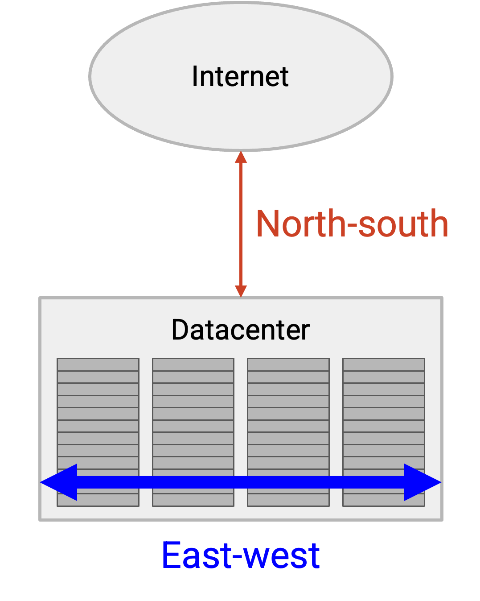
Racks
A datacenter fundamentally consists of many servers. The servers are organized in physical racks, where each rack has 40-48 rack units (slots), and each rack unit can fit 1-2 servers.
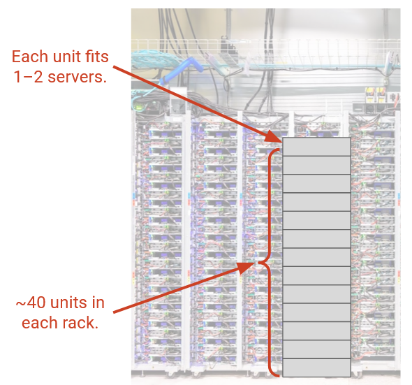
We’d like all the servers in the datacenter to be able to communicate with each other, so we need to build a network to connect them all. What does this network look like? How do we efficiently install links and switches to meet our requirements?
First, we can connect all the servers within a single rack. Each rack has a single switch called a top-of-rack (TOR) switch, and every server in the rack has a link (called an access link or uplink) connecting to that switch. The TOR is a relatively small router, with a single forwarding chip, and physical ports connecting to all the servers on the rack. Each server uplink typically has a capacity of around 100 Gbps.
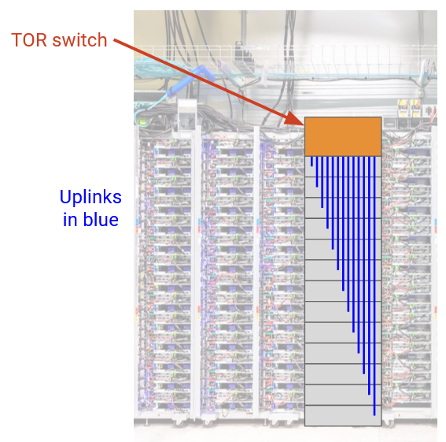
Next, we have to think about how to connect the racks together. Ideally, we’d like every server to talk to every other server at their full line rate (i.e. using the entire uplink bandwidth).
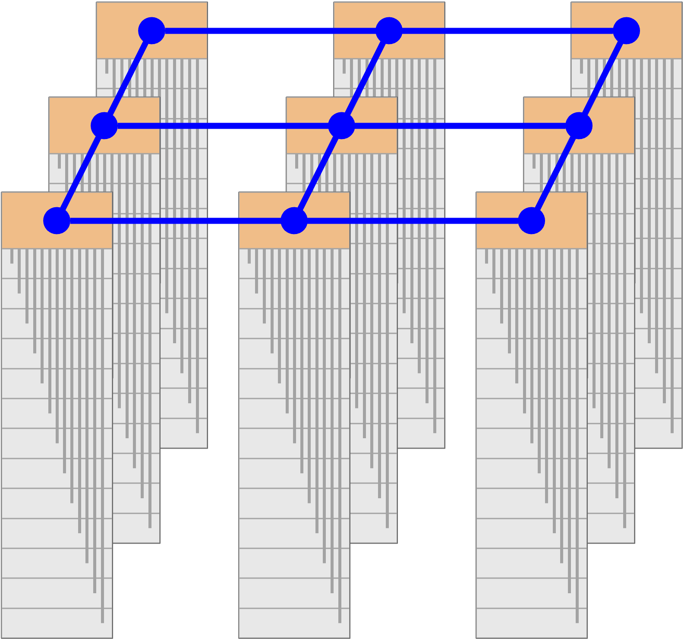
Bisection Bandwidth
Before thinking about how to connect racks, let’s develop a metric for how connected a set of computers are.
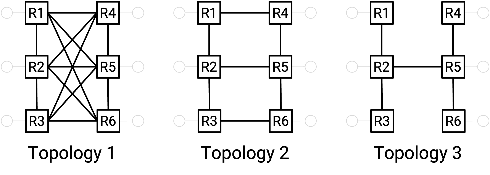
Intuitively, even though all three networks are fully connected, the left network is the most connected, the middle network is less connected, and the right network is the least connected. For example, the left and middle networks could support 1-4 and 3-6 simultaneously communicating at full line rate, while the right network cannot.
One way to argue that the left network is more connected is to say: We have to cut more links to disconnect the network. This indicates that there are lots of redundant links, which allows us to run many simultaneous high-bandwidth connections. Similarly, one way to argue that the right network is less connected is to say: We only have to cut the 2-5 link to connect the network, which indicates the existence of a bottleneck that prevents simultaneous high-bandwidth connections.
Bisection bandwidth is a way to quantify how connected a network is. To compute bisection bandwidth, we compute the number of links we need to remove in order to partition the network into two disconnected halves of equal size. The bisection bandwidth is the sum of the bandwidths on the links that we cut.
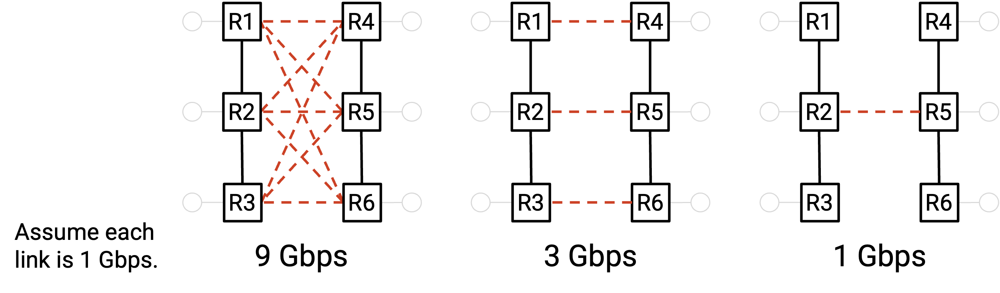
In the rightmost structure, we only need to remove one link to partition the network, so the bisection bandwidth is just that one link. By contrast, in the leftmost structure, we need to remove 9 links to partition the network, so the bisection bandwidth is the combined bandwidth of all 9 links.
An equivalent way of defining bisection bandwidth is: We divide the network into two halves, and each node in one half wants to simultaneously send data to a corresponding node in the other half. Among all possible partitions of nodes, what is the minimum bandwidth that the nodes can collectively send at? Considering the worst case (minimum bandwidth) forces us to think about bottlenecks.
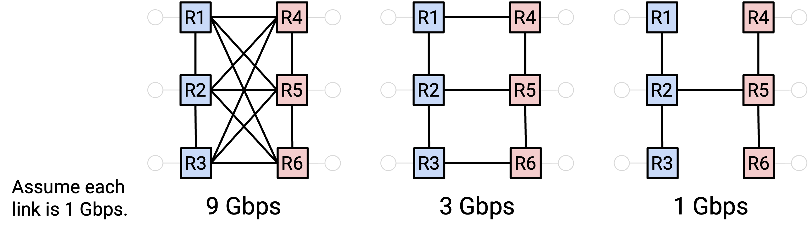
The most-connected network has full bisection bandwidth. This means that there are no bottlenecks, and no matter how you assign nodes to partitions, all nodes in one partition can communicate simultaneously with all nodes in the other partition at full rate. If there are N nodes, and all N/2 nodes in the left partition are sending data at full rate R, then the full bisection bandwidth is N/2 times R.
Oversubscription is a measure of how far from the full bisection bandwidth we are, or equivalently, how overloaded the bottleneck part of the network is. It’s a ratio of the bisection bandwidth to the full bisection bandwidth (the bandwidth if all hosts sent at full rate).
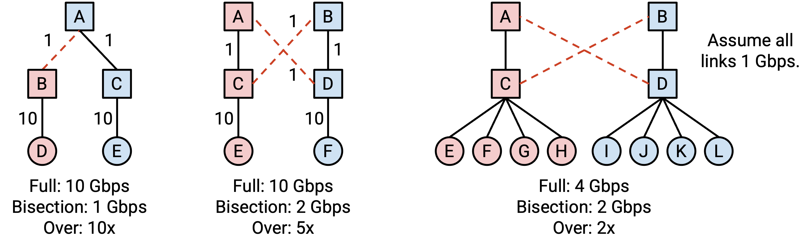
In the rightmost example, assuming all links are 1 Gbps, then the bisection bandwidth is 2 Gbps (to split the left four hosts with the right four hosts). The full bisection bandwidth, achieved when all four left hosts were simultaneously sending data, is 4 Gbps. Therefore, the ratio 2/4 tells us that the hosts can only send at 50% of their full rate. In other words, our network is 2x oversubscribed, because if the hosts all sent at full rate, the bottleneck links would be 2x overloaded (4 Gbps on 2 Gbps of links).
Datacenter Topology
We’ve now defined bisection bandwidth, a measure of connectedness that’s a function of the network topology. In a datacenter, we can choose our topology (e.g. choose where to install cables). What topology should we build to maximize bisection bandwidth?
One possible approach is to connect every rack to a giant cross-bar switch. All the racks on the left side can simultaneously send data at full rate into the switch, which forwards all that data to the right side at full rate. This would allow us to achieve full bisection bandwidth.
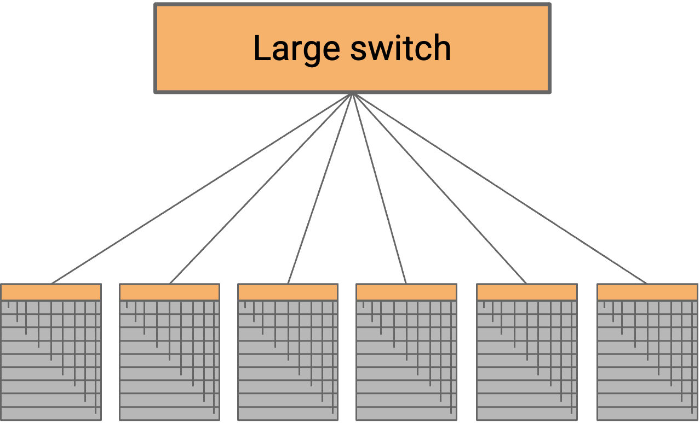
What are some problems with this approach? The switch will need one physical port for every rack (potentially up to 2500 ports). We sometimes refer to the number of external ports as the radix of the switch, so this switch would need a large radix. Also, this switch would need to have enormous capacity (potentially petabits per second) to support all the racks. Unsurprisingly, this switch is impractical to build (even if we could, it would be prohibitively expensive).
Fun fact: In the 2000s, Google tried asking switch vendors to build a 10,000-port switch. The vendors declined, saying it’s not possible to build this, and even if we could, nobody is asking for this except you (so there’s no profit to be made in building it).
Another problem is that this switch is a single point of failure, and the entire datacenter network stops working if this switch breaks.
Another possible approach is to arrange switches in a tree topology. This can help us reduce the radix and the bandwidth of each link.
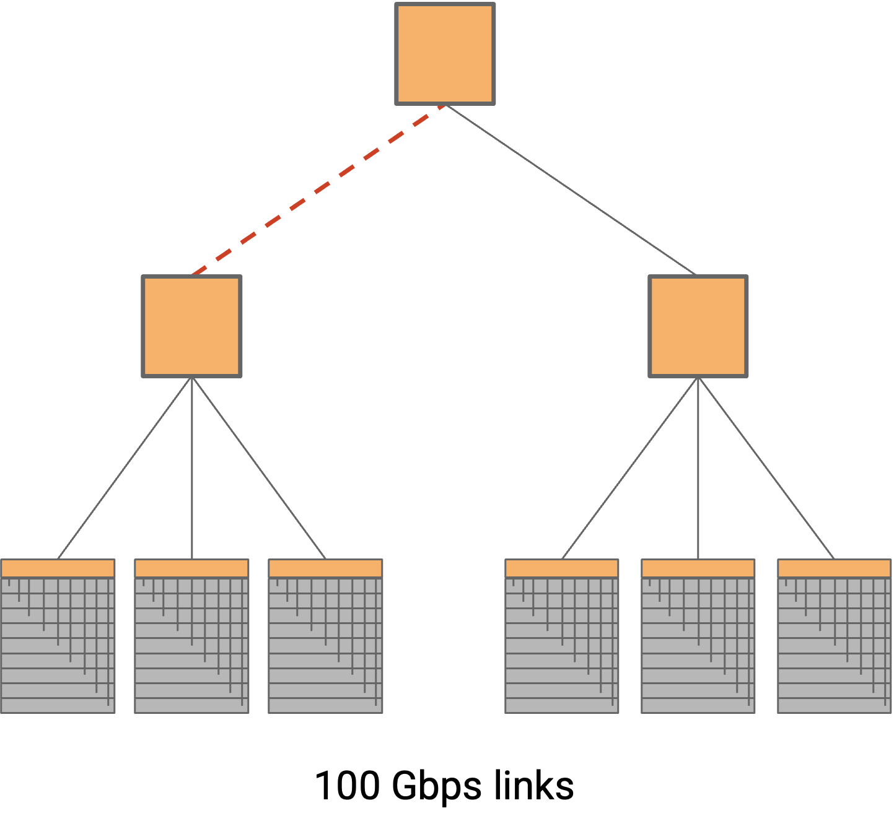
What are some problems with this approach? The bisection bandwidth is lower. A single link is the bottleneck between the two halves of the tree.
To increase bisection bandwidth, we could install higher-bandwidth links at higher layers.
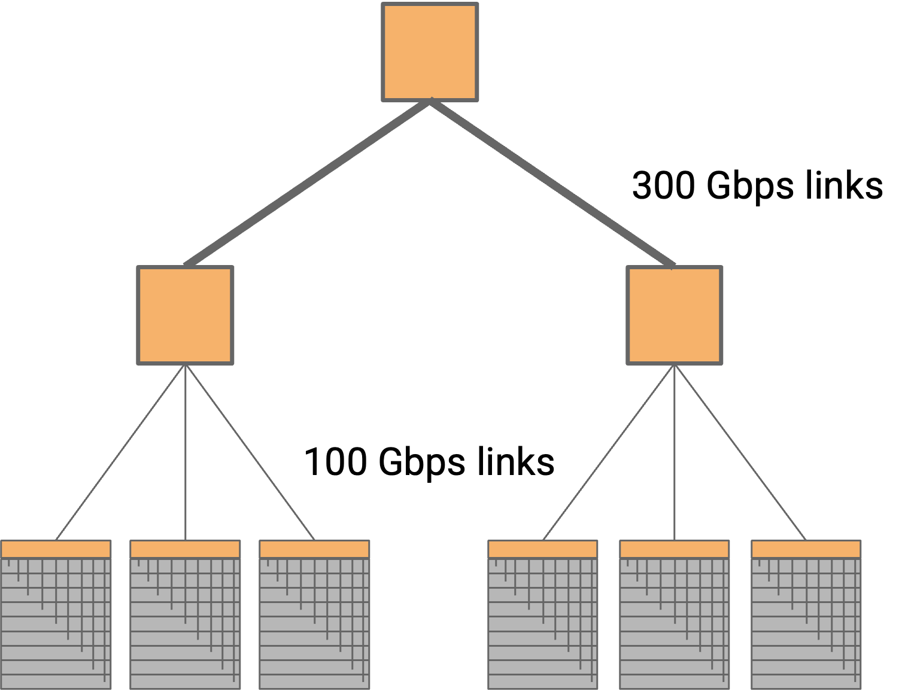
In this case, if the four lower links are 100 Gbps, and the two higher links are 300 Gbps, then we’ve removed the bottleneck and restored full bisection bandwidth.
This topology can be used, although we still haven’t solved the problem where the top switch is expensive and scales poorly.
Clos Networks
So far, we’ve tried building networks using custom-built switches, potentially with very high bandwidth or radix. These switches are still expensive to build. Could we instead design a topology that gives high bisection bandwidth, using cheap commodity elements? In particular, we’d like to use a large number of cheap off-the-shelf switches, where all the switches have the same number of ports, each switch has a low number of ports, and all link speeds are the same.
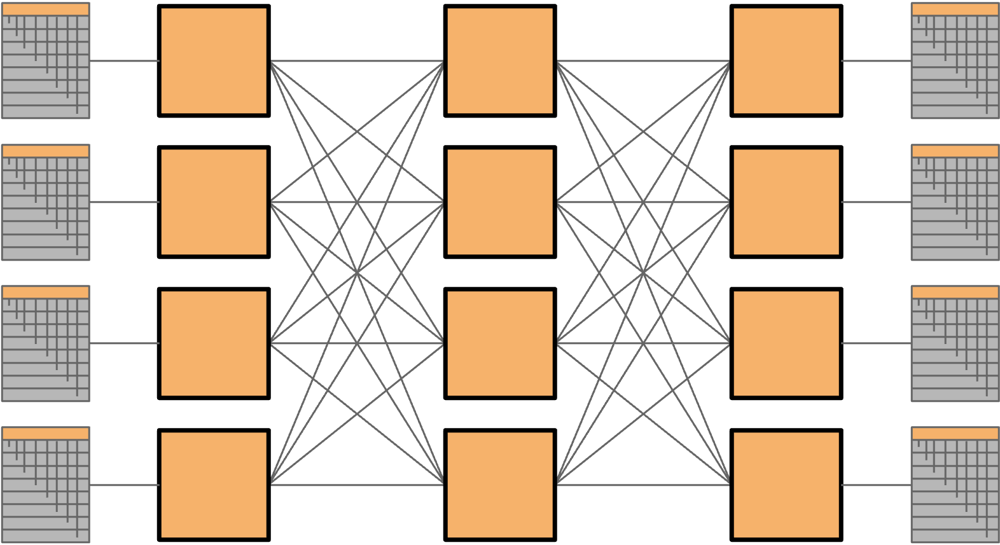
A Clos network achieves high bandwidth with commodity parts by introducing a huge number of paths between nodes in the network. Because there are so many links and paths through the network, we can achieve high bisection bandwidth by having each node send data along a different path.
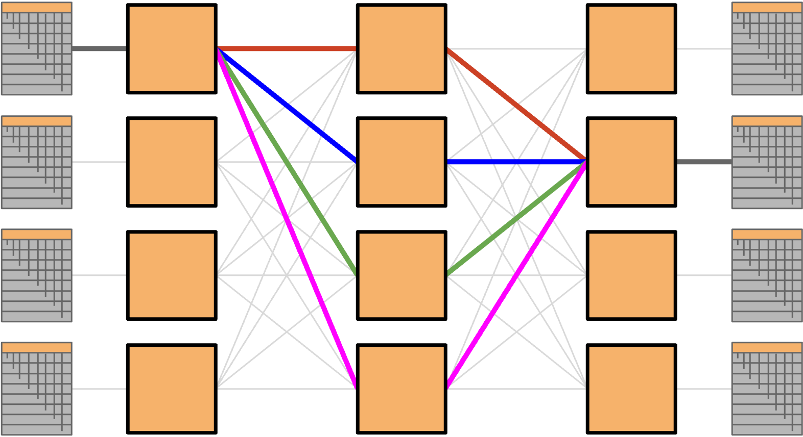
Unlike custom-built switches, where we scaled the network by building a bigger switch, we can scale Clos networks by simply adding more of the same switches. This solution is cost-effective and scalable!
Clos networks have been used in other applications too, and are named for their inventor (Charles Clos, 1952).
In a classic Clos network, we’d have all the racks on the left send data to the racks on the right. In datacenters, racks can both send and receive data, so instead of having a separate layer of senders and recipients, we can have a single layer with all the racks (acting as either sender or recipient). Then, data travels along one of the many paths deeper into the network, and then back out to reach the recipient. This result is called a folded Clos network, because we’ve “folded” the sender and recipient layers into one.
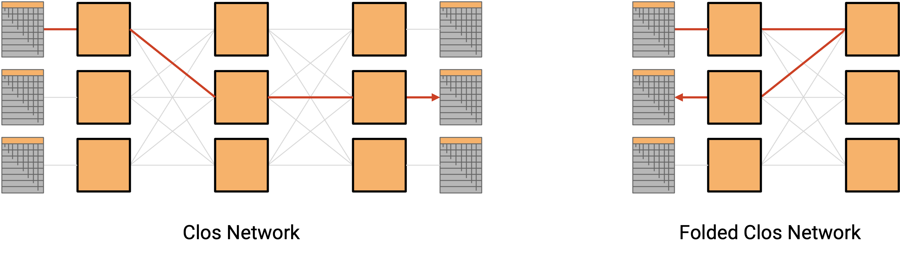
Fat-Tree Clos Topology
The fat-tree topology has low radix per switch, and achieves full bisection bandwidth. However, the switch at the top of the tree is expensive, scales poorly, and still represents a single point of failure.
The Clos topology allows us to use commodity switches to scale up our network. If we combine the Clos topology with the fat-tree topology, we can build a scalable topology out of commodity switches!
The topology presented here was introduced in a 2008 SIGCOMM paper titled “A Scalable, Commodity Data Center Network Architecture” (Mohammad Al-Fares, Alexander Loukissas, Amin Vahdat).
In a k-ary fat tree, we create k pods. Each pod has k switches.
Within a pod, k/2 switches are in the upper aggregation layer, and the other k/2 switches are in the lower edge layer.
(Note: This topology is defined for even k, so that we can split up the switches evenly between the aggregation layer and edge layer).
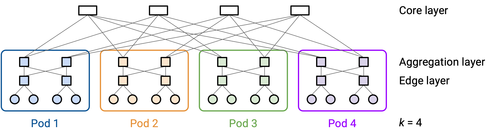
Each switch in the pod has k links. Half of the links (k/2) connect upwards, and the other half (k/2) connect downwards.
Consider a switch in the upper aggregation layer. Half (k/2) of its links connect up to the core layer (which connects the pods, discussed more below). The other half (k/2) of its links connect downwards to the k/2 switches in the edge layer.
Similarly, consider a switch in the lower edge layer. Half (k/2) of its links connect upwards to the k/2 switches in the aggregation layer. The other half (k/2) of its links connect downwards to k/2 hosts in this pod.
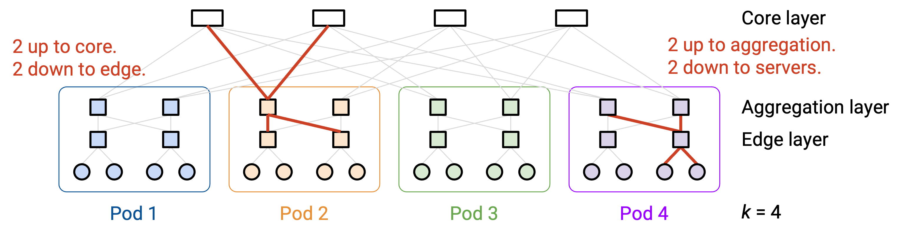
Next, let’s look at the core layer, which connects the pods together. Each core switch has k links, connecting to each of the k pods.
There are \((k/2)^2\) core switches. How did we derive this number? There are k pods, and each pod has k/2 switches in the upper aggregation layer, for a total of \(k^2/2\) switches in the aggregation layer. Each aggregation-layer switch has k/2 links pointing upwards, for a total of \(k^2/2 \times k/2 = k^3/4\) links pointing upwards. This means that the core layer will need to have a total of \(k^3/4\) links pointing downwards, to match the number of upwards links from the aggregation layer.
Each core layer switch has k links pointing downwards, so we need \(k^2/4\) core layer swiches (each with k links) to create \(k^3/4\) links pointing towards. This allows the number of links up from the aggregation layer to match the number of links down from the core layer.
We can also compute that there are \((k/2)^2\) hosts per pod in this topology. How did we derive this number? There are k/2 switches at the edge layer of each pod. Each edge-layer switch has k/2 downwards links to hosts, for a total of \(k/2 \times k/2 = (k/2)^2\) hosts per pod. Note that each host is only connected to one edge-layer switch (a host is not connected to multiple switches in this topology). Since there are k pods in total, we can also deduce that there are \((k/2)^2 \times k\) hosts in total in this topology.
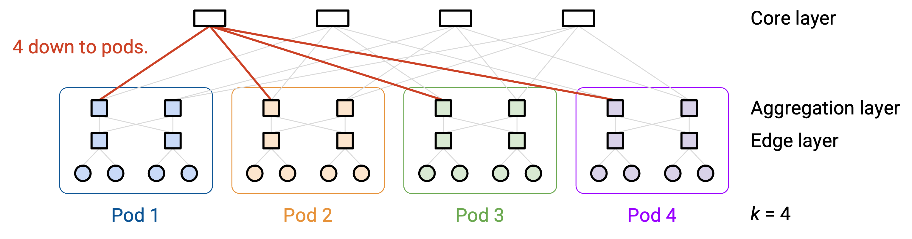
k = 4, the smallest example, is unfortunately a little confusing because some of the numbers coincidentally end up the same (e.g. \((k/2)^2 = k = 4\)). For a clearer example, we can look at k = 6.
Each pod has k = 6 switches. k/2 = 3 switches are in the upper aggregation layer, and k/2 = 3 switches are in the lower edge layer.
An edge layer switch has k/2 = 3 links downwards to 3 hosts, and k/2 = 3 links upwards to the 3 aggregation switches in the same pod.
An aggregation layer switch has k/2 = 3 links upwards to the core layer (specifically, to 3 different core layer switches), and k/2 = 3 links downwards to the 3 edge layer switches in the same pod.
Each pod has k/2 = 3 edge switches, each connected to k/2 = 3 hosts, so each pod has a total of \((k/2)^2 = 9\) hosts. The topology has k pods in total, for a total of \(k \times (k/2)^2 = 54\) hosts.
At the core layer, we have \((k/2)^2 = 9\) core switches. Each switch has k = 6 links, connecting downwards to each of the k = 6 pods.
In total, the core layer has \((k/2)^2 \times k\) links pointing downwards (number of core switches, times number of links per switch). The aggregation layer has \(k \times (k/2) \times (k/2)\) links pointing upwards (number of pods, times number of aggregation switches per pod, times number of upwards links per aggregation switch). These two expressions match (and evaluate to 54 for k = 6), allowing the core layer to be fully-connected to the aggregation layer.
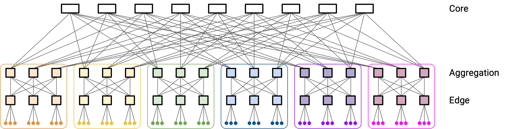
This topology achieves full bisection bandwidth. If you split the pods into two halves (e.g. left half and right half), then every host in the left half has a dedicated path to a corresponding host in the right half. This allows all the hosts to pair up (one in left half, one in right half), and for each pair to communicate along a dedicated path, with no bottlenecks.
Also, notice that this topology can be built out of commodity switches. Every switch has a radix of k links, regardless of which layer the switch is in. Also, every link can have the same bandwidth (e.g. 1 Gbps), and the scalability comes from the fact that we’ve created a dedicated path between any pair of hosts.
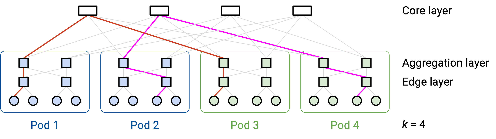
Another way to see the full bisection bandwidth is to delete links until the network is partitioned into two halves (pods in the left half, and pods in the right half).
Each core layer switch has k links, one to each of the pods. This also means that each core layer switch has k/2 links to the left side, and k/2 links to the right side.
In order to fully isolate one side (e.g. fully isolate the left side), then for each core switch, we’d have to cut k/2 links to the left side. There are \((k/2)^2\) core switches, and we have to cut k/2 links per switch, for a total of \((k/2)^3\) links cut. This means our bisection bandwidth is \((k/2)^3\) links (assuming every link has identical bandwidth).
There are \((k/2)^2\) hosts per pod, and k/2 pods in the left side, for a total of \((k/2)^3\) links in the left side. Similarly, there are \((k/2)^3\) links in the right side. If every host in the left side wanted to communicate with every host in the right side, then \((k/2)^3\) links’ worth of bandwidth would be needed. Our bisection bandwidth matches this number, which means that full bisection bandwidth is achieved.
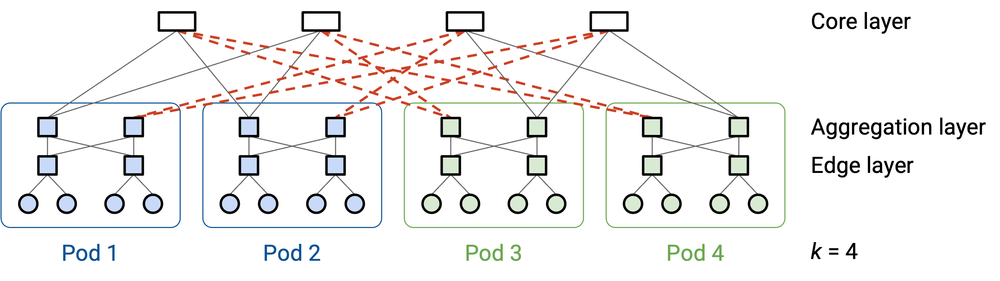
How does this Clos fat-tree topology relate to the idea of racks and top-of-rack switches from earlier?
For specific nice values of k, we can arrange the hosts and switches inside a pod into separate racks, and connect the racks to to each other.
For example, consider k = 48, the example value used in the original paper. This means that inside a pod, there are k/2 = 24 aggregation layer switches, k/2 = 24 edge layer switches, and \((k/2)^2\) = 576 hosts per pod.
We can arrange the switches and hosts such that all 48 switches live in a rack that we place in the middle. Then, we can surround that rack of switches with 12 racks, each holding 48 hosts. This helps us fit all switches and hosts into identically-sized racks (48 machines per rack). Placing the switches in the middle rack also reduces the amount of physical wiring needed to build this topology.
The middle rack has k = 48 switches. Each switch has k = 48 ports, for a total of \(48^2 = 2304\) ports in this rack.
Of these \(k^2 = 2304\) ports, half of them (\(k^2/2 = 1152\)) connect switches inside the rack to each other. How did we derive \(k^2/2\)? It might help to look at some of the conceptual diagrams from earlier. Each of the k/2 aggregation layer switches has k/2 downward links, for a total of \((k/2)^2\) ports used. Similarly, each of the k/2 edge layer switches has k/2 upward links, for a total of \((k/2)^2\) ports used. This gives a total of \(2 \times (k/2)^2 = k^2/2\) ports used.
Note that the links between aggregation and edge switches are connecting switches inside the same rack. Therefore, two ports are needed for each link (one from an aggregation switch, and one from an edge switch), and that’s why we doubled the \((k/2)^2\) value (or equivalently, accounted for that value twice at both the aggregation and edge layers).
Of the \(k^2 = 2304\) ports, another quarter of them (\(k^2/4 = 576\)) connect switches to hosts inside the same pod. How did we derive this number? Remember that there are \((k/2)^2\) hosts within a pod, and each host is connected to exactly one switch. Therefore, we need \((k/2)^2 = k^2/4\) ports on the switches to connect to hosts.
Finally, of the \(k^2 = 2304\) ports, the remaining quarter (\(k^2/4 = 576\)) connect the pod to the core layer. How did we derive this number? Remember that there are \((k/2)^2\) core switches, and each core switch has a link to each pod. In other words, a pod has a single link to each of the \((k/2)^2\) core switches. Therefore, we need \((k/2)^2 = k^2/4\) ports on the switches to connect to the core switches.
In summary: Out of \(k^2\) total ports, half of them are used to interconnect aggregation/edge switches in the same layer (connections happen entirely within the middle rack). Another quarter of them are used to connect edge switches to hosts in the pod (connections between the middle rack and the 12 surrounding racks with hosts). The last quarter of them are used to connect aggregation switches to the core layer (connections between the middle rack and other core-layer racks).
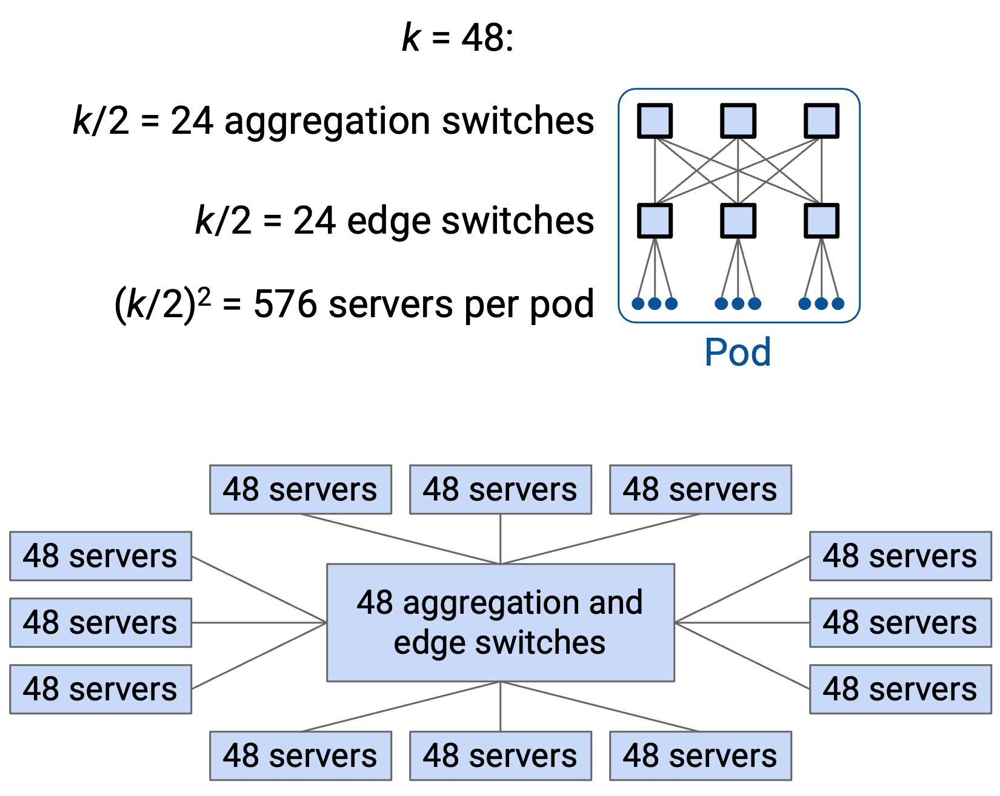
Real-World Topologies
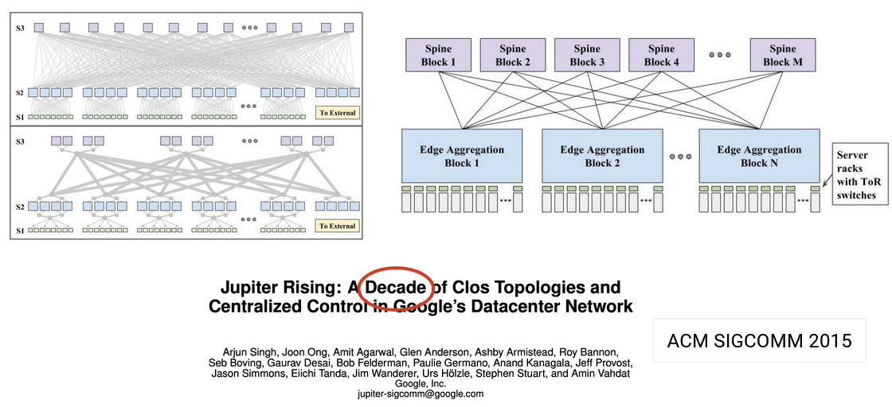
In this example (2008), there are many different paths between any two end hosts.
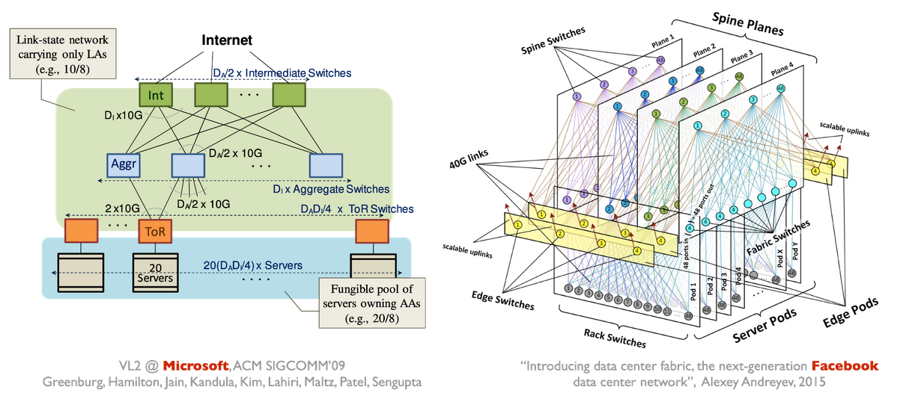
In this paper (2015), various topologies were explored.
Many specifics variants exist (2009, 2015), but they all share the same goal of achieving high bandwidth between any two servers.